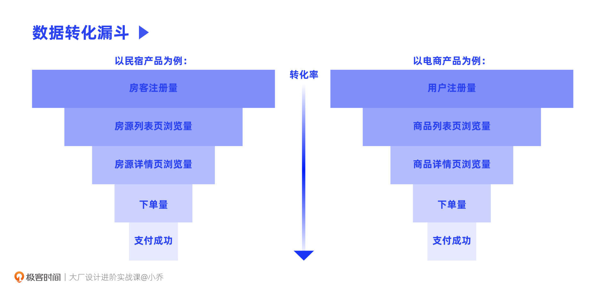
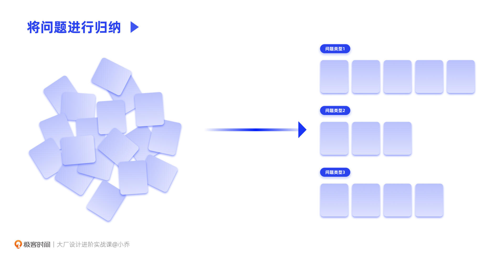
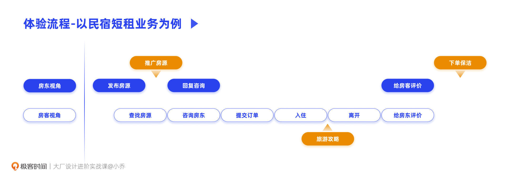
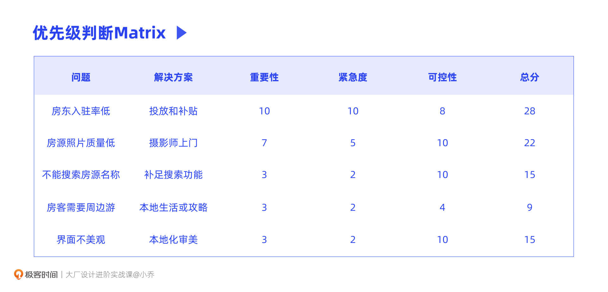

- 00 开篇词 升维思考，是设计师有效成长的第一步.md.html
- 01 业务周期：0-1-10-100-N的发展策略.md.html
- 02 商战模式：如何在商业竞争下突出重围？.md.html
- 03 市场洞察：如何找寻差异化撬动支点？.md.html
- 04 用户洞察：不懂用研的设计师不是好职场人.md.html
- 05 用户画像：是形式主义还是真的有效？.md.html
- 06 用户旅程：挖掘不同用户的核心机会点.md.html
- 07 职场晋升：看懂晋升的“游戏规则”.md.html
- 08 设计价值升级：五层进阶突破成长.md.html
- 09 基础价值 核心三原力：如何将需求转化为设计稿？.md.html
- 10 基础价值 第一性原理：从问题本质解决问题.md.html
- 11 基础价值 设计复盘：只是量化设计结果吗？.md.html
- 12 二级价值 负向网兜：如何全面发现负向问题？.md.html
- 13 二级价值 设计自驱：如何做好项目Owner？.md.html
- 14 二级价值 自驱合作：如何反内卷处理合作关系？.md.html
- 15 三级价值 增长误区：思维惯性陷阱和虚荣数据.md.html
- 16 三级价值 用户增长历程：AARRR是万能的吗？.md.html
- 17 三级价值 产品增长：如何做好产品创新？.md.html
- 18 三级价值 运营增长：如何自驱营销活动和投放？.md.html
- 19 三级价值 品牌增长 抢占心智，赢得人心红利.md.html
- 20 三级价值 增长实操：如何“步步为营”推动落地？.md.html
- 21 四级价值 L型赋能：让T型人才发挥更大价值.md.html
- 22 四级价值 “网状对比”解决共性痛点.md.html
- 23 五级价值 商业画布：设计师可以担任业务方吗？.md.html
- 24 五级价值 共创洞察：如何做好一次完善的workshop？.md.html
- 25 五级价值 领导力觉醒：写给新晋管理者.md.html
- 26 工作选择（上）：2B or 2C设计师？如何规划领域？.md.html
- 27 工作选择（下）：大厂 or 小厂？如何选择赛道？.md.html
- 28 人才地图：认知自我，成为高潜力人才.md.html
- 29 成长历程：如何从设计小白成长为团队负责人？.md.html
- 30 冰山模型：如何成为让面试官欣赏的“面霸”？.md.html
- 31 作品集指导：什么是面试官喜欢的作品集？.md.html
- 用户故事 什么是职场设计师进阶的正确姿势？.md.html
- 结束语 突破自我，成人达己.md.html
- 捐赠
12 二级价值 负向网兜：如何全面发现负向问题？
你好，我是小乔。
从这节课开始，我们就要昂首阔步向着二级阶梯迈进了。踏上了二级阶梯的你，将再也不会被认为是美工，也将不再是那个只能承接需求的角色。
我们一起来回顾一下二级价值是什么，二级价值就是找出产品的负向体验，根据优先级发起设计自驱项目进行优化，推动上线后再量化我们的优化结果，以此超出主管和业务方的预期，收获更好的绩效。
许多在工作中有积极度和投入度的同学，在实现基础价值的时候，其实已经在努力尝试二级阶梯的事情了，但往往大家在实操中会遇到一些困难，比如觉得首页不好看，想发起首页改版项目，却怎么也推动不了；或者想优化某个界面的交互细节，但业务方却说优先级不高。
原因很简单，因为不管大厂、小厂，各方面的资源都太有限了，各个需求都在排期，都来不及开发。如果不是非常有必要的项目，很难说服业务方把资源投入进来。你认为有必要的项目，可能是所有需要优化的项目中的一个很小的事情，所以我们需要全面思考问题，避免提出的项目过于离散。
今天，我们就来一起看看，如何全面发现负向问题。在对这些问题进行汇总和归类后，我们会一起学习排列优先级的方法，判断哪个问题值得我们优先去解决。
如何全面挖掘负向问题？
工作中，我们通常会采用四种方式来发现负向问题，我称它们为“负向网兜”，用这个大网兜，把负向问题一网打尽。这四种方式分别是：数据反馈、用户反馈、可用性测试、用户体验旅程。这些方法是不是很眼熟呢？大部分都是我们前面已经讲过的工具，它们已经是你的老朋友了。
方式一：数据反馈
相信不用我解释，你已经知道真实的上线数据有多么重要了。大家常看的数据有：PV、UV、DAU、点击转化率、成交转化率、跳失率等等。如果是投放和增长相关的业务，会看CPI、CPM、DNU、次留、7留、30留等数据。
我们对任何数据的洞察，前提都是对业务目标及岗位需求有着清晰的理解。要知道，数据只有依附在实际业务上，才能从概念转化成行动的指导。
如果你对业务的理解程度还不够有信心，我们可以与业务方一起讨论上线的数据指标，也可以找数据分析师回顾近期的数据动向情况，从而发现机会点；如果你已经对业务目标和数据指标都非常清晰，也可以自己查看数据分析平台，主动发现问题。
一般大厂对设计师的要求是，即便是校招生也需要会看数据平台，这是一项基本能力。而年轻同学和资深同学的主要差异，就在于能不能主动根据数据发现问题和机会点。
我们可以通过具体案例来体验一下发现问题和机会点的过程。
我曾经在上海市中心开过一家风靡一时的网红民宿，使用的平台是Airbnb，撮合房东和住客。Airbnb有一个体验让我印象深刻，在申请开通民宿后，可以预约摄影师上门拍摄精美的民宿照片，从而吸引用户入住。这个开放生态的动作让我对这个产品产生了兴趣。
我后来调研了Airbnb的创业发展过程，Airbnb在创业初期，注册率很高，但入住率很低。如果此时是我们在设计这款产品，你会怎么做呢？是的，我们可以查看每一层漏斗的数据，去筛查是在哪个步骤出了问题。
其实用户从注册到入住，中间还有很多环节，比如浏览房源列表页、点击进入某个房源的详情页、下单入住订单，最终成功入住。因此，针对产品功能来说，筛查数据的核心就是筛查每一层漏斗的转化率，并发起方案来提升转化率。

如果我们排查后发现，Airbnb的数据是从查看房源列表到进入房源详情页的转化率骤减的，那我们接下来要做什么呢？没错，我们可以采用假设原因、快速实验、数据验证的方式得出结论。
比如，我们假设了3种原因：
- 房源卡片的信息量不足，看不出哪个房源的设施更好、离目的地更近、评价更好；
- 房源图片不够吸引人，看上去都没有住的欲望；
- 房源列表页没有快速筛选的功能，比如用户只想看打折的房源，或者只想住面积超过30平的房源。
此时就可以依据我们的假设，快速出几个针对性方案，小范围开设AB测试实验，通过真实上线的方式去做数据验证，从而判断哪个假设和方案是成立的。
方式二：用户反馈
在我们的真实工作中，未必真的有条件将这些假设的可能性都去做快速低成本上线实验，因为各职能的资源往往都是紧缺的。此时，用户的声音可以帮助我们更高效地做出判断。
除了运用上一章我们学习过的用户调研方法以外，我们还可以收集用户的主动反馈。通常公司内部都有用户反馈后台和客服中心，我们可以查阅用户反馈的内容，并记录App Store或者Google Play上用户发的评论，来将问题进行总结和归类。对于用户高频提出的问题、紧急程度高的问题，需要重点关注。

例如，针对从房源列表页到房源详情页的转化率骤减的问题，Airbnb在收集了用户反馈后发现，核心断层原因在于用户浏览列表页上的民宿照片时，觉得照片没有入住欲望，所以就直接流失了，没有点击进入详情页，更没有进行下一步的预订转化。
团队分析后发现，民宿的图片都是房东随意拿手机拍的，而大部分房东并不懂得怎样拍出房子的优势、展现房间的温馨。因此，Airbnb召集了纽约当地的摄影师人群，让他们用单反为房东拍摄专业的住房照片，大幅提升了预订率和入住率。
在验证了这个模式的可行性后，Airbnb就在全世界范围招募摄影师，为不同国家地区的房东提供服务，实现了指数型爆发增长。
方式三：可用性测试
除了根据上线数据分析、归纳整理用户反馈以外，对于从0到1上线的产品、功能，尤其是国际化产品或特殊人群产品，可用性测试对于找出负向体验是极其必要的。
比如，我们如果在2019年之前给Airbnb做可用性测试，任务是让用户预订上海一家在建国西路上叫做“SoYou”的房源。有些用户会尝试通过搜索路名来查找附近的房源，并顺利地走通流程；有的用户会直接搜索民宿名称，然而却发现查找不到，因为当年的Airbnb没有搜索民宿名称的功能，只能通过地点来圈定附近的民宿。
这就说明，如果用户在网上看到过有人夸赞某家民宿，知道了这家民宿的名字，却还是没有办法在Airbnb上成功入住，因为搜索不到。
目前Airbnb已经上线了搜索民宿名称的功能，用户不仅可以根据地点来选择周边的民宿，也可以直接搜索到自己想住的民宿。
相信通过刚刚的例子，你也理解了可用性测试对于找出负向体验的意义。你可以通过这份报告得知产品哪些模块有体验问题、出现问题的频率是多少，在判断严重程度后，就可以按优先级将每个问题分配给相应职能部门的同学来解决了。
方式四：用户体验旅程
我们在前面的课程中一起学习了用户体验旅程这个工具，它可以帮助我们分析不同Persona的体验切入点，起到事半功倍撬动这类人群的作用。同时，它也可以帮助我们全链路地规划所有触点，避免流程的遗漏。
在这个过程中，我们不必过于注重正规用户旅程地图的视觉表现形式，因为这里的主要目的是帮助自己更清晰地思考，所以可以以简化的体验流程来复盘链路。
我们继续以Airbnb为例，看看用户旅程图可以怎样帮助我们优化负向体验。
常规的入住链路是这样的：房东发布好房源后，等着房客主动联系和咨询，房东回答房客相关问题，房客确认入住后提交订单，房客到了入住当天办理入住，房客到期后离开，房客给房东写评价，房东给房客写评价。
我们在分析用户体验旅程的时候就可以发现，整个流程都是比较平淡的，也没有让用户产生惊喜的体验。其实，我们还可以让体验更好。
比如，房东发布好房源后，还可以有一些运营动作，可以一键转发到其他的社交平台，也可以找KOL或者KOC进行房源推广，从而大幅提升入住率。房客入住房源后，很想在周边旅游，平台可以推荐房源周边的饭店或休闲娱乐场所，提供全链路的旅游攻略。再比如，房东与房客互评后，在迎来下一个房客之前，需要完成对房源的打扫，那平台同样可以开放保洁生态，对接保洁员，让房东可以一键下单，减少管理成本。

除了最常规的流程以外，还有许多其他的场景流程，比如用户没有成功入住的流程、房东突然需要收回房源的流程等等，每个流程都有很多机会点可以深挖。可以说，用户体验旅程能够帮助我们找到每条场景链路中没有闭环的地方，从而引发对于机会点的思考。
如何定夺项目的优先级？
当我们通过负向网兜的四种方式，把这些需要优化的问题全面筛查并归类整理后，你大概率会发现，自己之前的提案确实只是各种问题中的凤毛麟角，难怪业务方觉得优先级不高，不愿意配合，推动困难。
那我们该如何判断项目的优先级呢？判断的标准是什么呢？
其实，判断的标准不是一成不变的，而是和业务此时此刻的目标强相关。我们通常会看这个问题的重要性、可控性、紧急程度、成本、创新性这五个维度，也可以根据业务目标采用其他更适合的维度。这里可以给你提供两个不同的案例来说明：
如果我们在孵化一个IM产品，处于成长期，此时公司对业务的成本控制不是非常严苛，因为IM带来的最大价值是用户流量。那我们更多会看解决这个问题后，能不能带来更多用户，让用户留存，也就是根据产品的近期目标来判断重要性、紧急度。
而如果我们目前在做一款小说阅读产品，已经完成了增长期，进入了成熟期，此时公司会要求我们做出产品创新并实现商业化变现，并严格控制人员招聘、投放运营带来的成本开销。那我们要看的维度就是解决这个问题的重要性，以及成本、营收和创新性。
还是回到Airbnb的例子。假设我们现在处于Airbnb打通中国市场的初期，也通过负向网兜梳理出了很多问题，以下面五个问题为例：
- 房东入驻量不高，虽然Airbnb在国外很流行，但在中国市场，很多人没有听过Airbnb，可以通过投放广告以及给房东收入补贴，来吸引更多房东入驻；
- 房东拍的房源照片不美观，虽然房源很好，房客却不愿意选择，可以通过摄影师上门服务来解决；
- 搜索功能不足，只能通过搜索地点来查看周边房源，不能直接搜索已知的房源，可以优化搜索功能；
- 用户除了住房以外，也想看看周边的休闲娱乐场所，平台可以向用户提供本地生活服务或旅游攻略；
- 用户反映界面不够美观，国内的互联网行业发展迅速，各产品的界面都非常美观，平台需要优化UI界面，符合中国用户审美。
针对这五个问题，我们如何排列优先级呢？由于处在拓展市场的初期，核心目标是让产品在该市场活下去，因此成本、盈利、创新性都不是此时的核心重点，重要性、紧急度、可控性，相对来说更为重要。
我们可以列一个表格，并且针对每个问题，在每个判断条件上打分，10分为满分，最后看哪个问题的总分最高，就可以判断哪个需求的优先级是最高的。

在表格中我们可以看到，提升房东的入驻率是产品活下去的前提，所以它的总分最高，也是第一优先级的事情；而为房客提供周边游攻略，虽然可以大幅提升房客的WOW Moment，但盘动本地生活资源并不是一件简单的事情，需要铺设地网建立对接，或发动用户进行UGC内容沉淀，整体可控性不高，可以在产品活下来之后再进行创新拓展。
当然，如果帮助我们判断优先级的条件只有两个，那也可以直接采用十字象限图的方式表达。比如横轴是重要性、纵轴是紧急度，那处于高重要性、高紧急度象限的问题，就需要优先被解决。
今日小结
今天，我们一起探讨了如何运用“负向网兜”全面挖掘负向体验，避免我们提出的优化需求过于离散。
“负向网兜”由我们的老朋友们组成，分别是：数据反馈、用户反馈、可用性测试和用户体验旅程。你会发现，其实不管我们目前处于初级水平还是进阶水平，这些老朋友们都会助力我们取得项目的成功，这也是为什么我把它们放在上一章商业和用户洞察的设计策略课程中。
最后，为了使我们提出的体验问题、优化需求能够被快速解决，我们也一起学习了如何确认项目的优先级，避免我们自驱推动的项目由于优先级不高而不被重视。
互动时刻
回顾你过往的工作，曾经提出的优化方案是否被反馈过优先级不高？是否因为难以推动自驱项目而受挫过？重新思考当时的项目，你会怎样做呢？
欢迎把你的经历和思考在留言区分享出来，与我和其他同学一起探讨。我们建了一个读者交流群，欢迎你的加入，和其他同学一起成长！如果你觉得有所收获，也欢迎把文章分享给你的朋友一起学习。我们下节课见。
© 2019 - 2023 Liangliang Lee. Powered by gin and hexo-theme-book.